Kumenan, Okayama: things to do, food and stays
Kumenan · Okayama
Kumenan
Highlighted on the Okayama map.

Stay
旅のあしあと
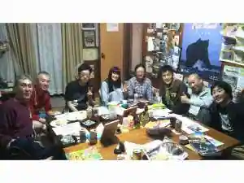
Tabi Noashiato
THE TANADA SAUNA
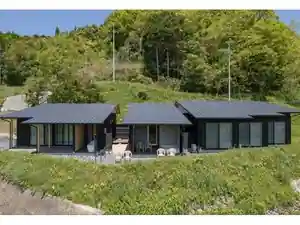
THE TANADA SAUNA
Dining
コーヒーハウス ヴィレッジ
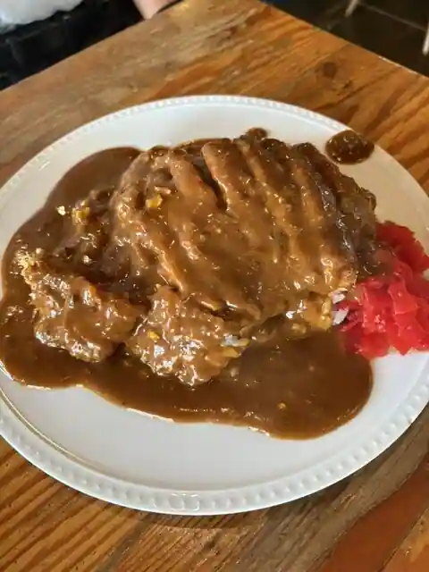
Coffee House Virejji
上籾棚田テラス 籾庵
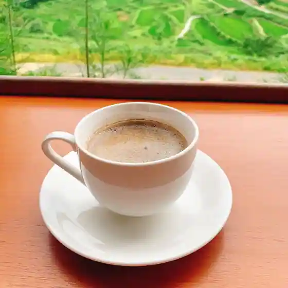
Ue Momi Tanada Terrace Momi Iori
とんこつらーめん 米久
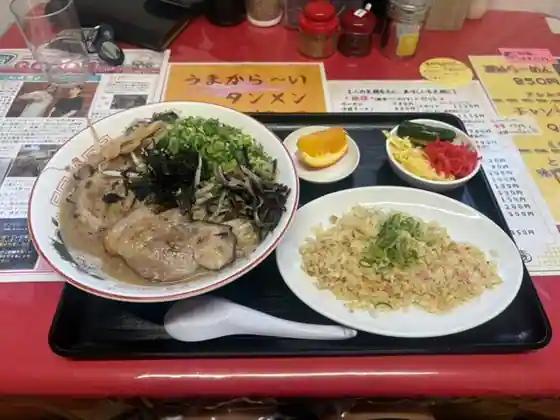
Tonkotsu Ramen Kome Kyu
農園スイーツmoimo
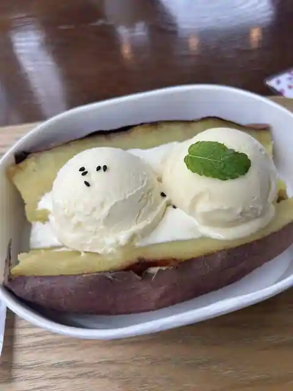
Noen Sweets moimo
中力うどん
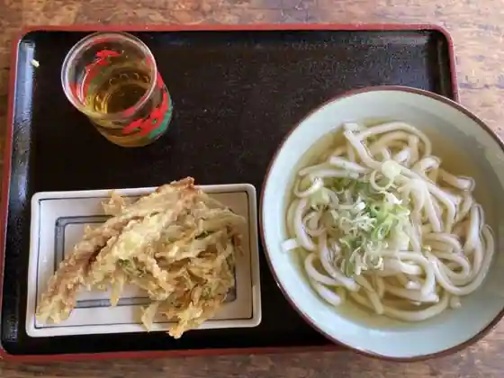
Churiki Udon
小川柳
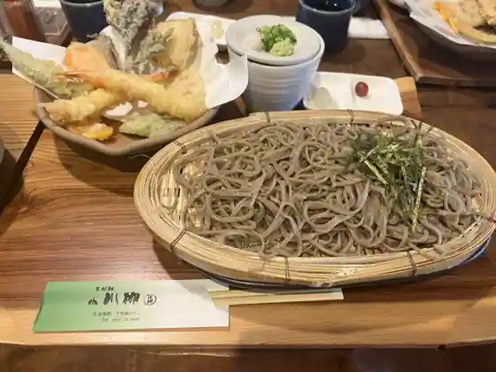
Ogawa Yanagi
さくら亭
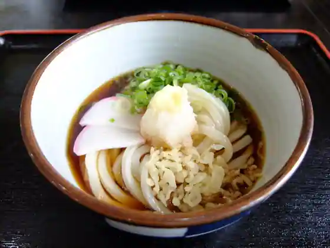
Sakura Tei
道の駅くめなん
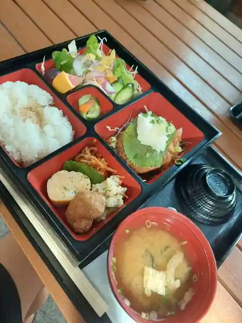
Michi No Eki Kumenan
有限会社 直進
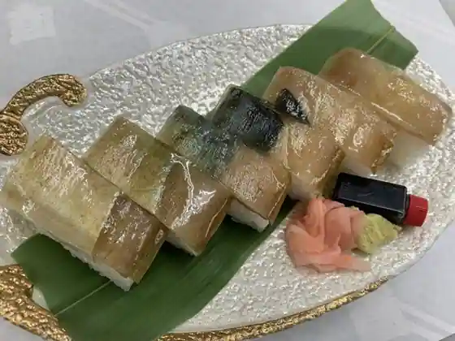
Yugengaisha Chokushin
パンのいえ ブレ
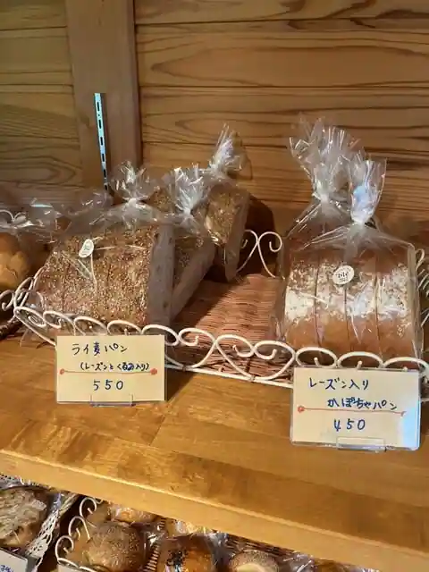
Bakery Noie Bure
中島ブロイラー
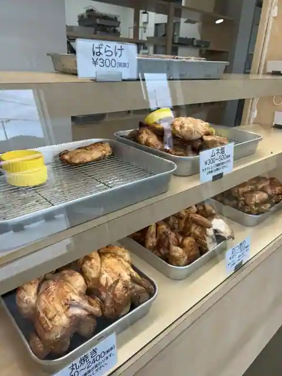
Nakajima Buroira
mamo
mamo
つるや 弓削店
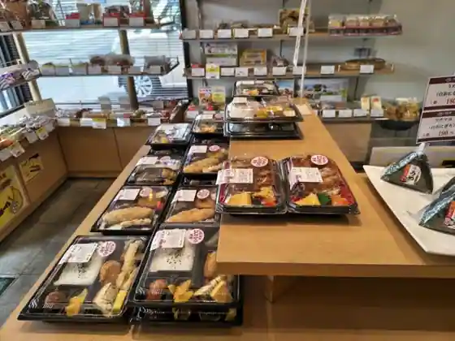
Tsuruya Yuge
サンサンくめなん
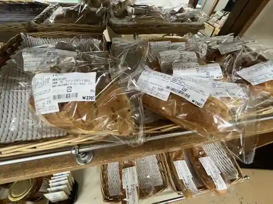
Sansan Kumenan
オーストラリアンスタイルカフェ CHITEYA
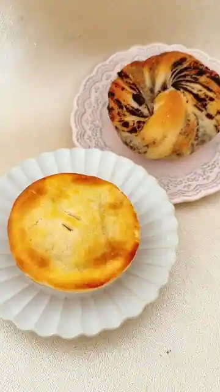
Osutorariansutairu Cafe CHITEYA
お好み焼きココ
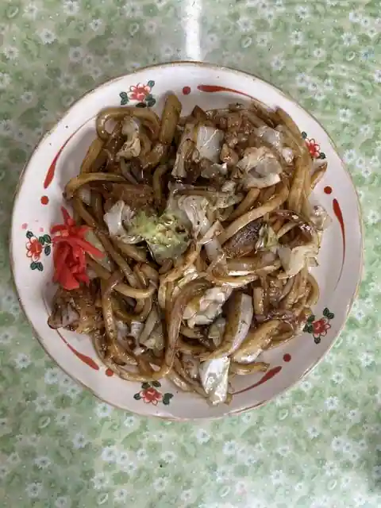
O Konomi Yaki Koko
くめなん食堂
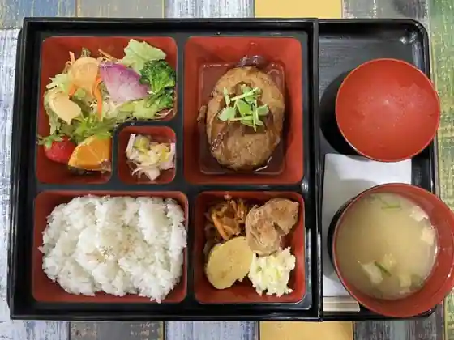
Kumenan Shokudo
石焼いも 福光
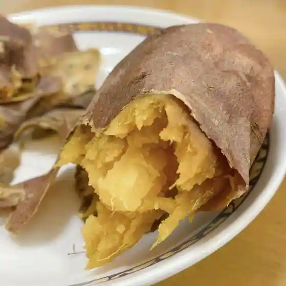
Ishiyaki Imo Fukumitsu
古民家のカフェとお宿 Sono.
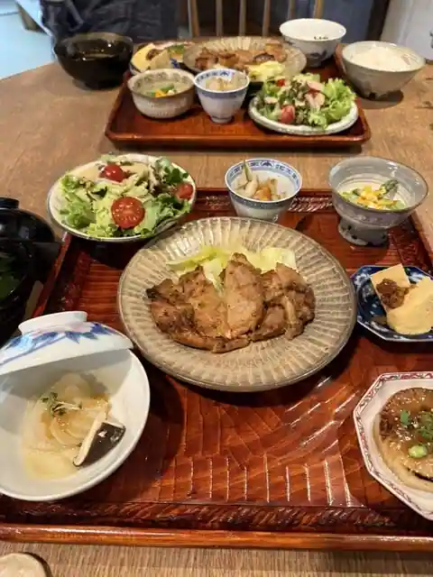
Ko Minka No Cafe To Yado Sono.
もむらや
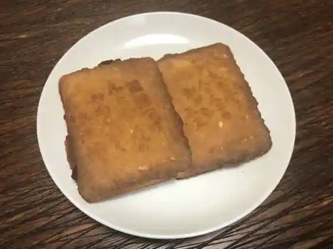
Momuraya
大源
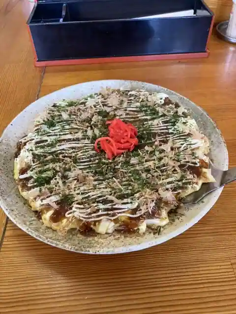
Daigen
団らん
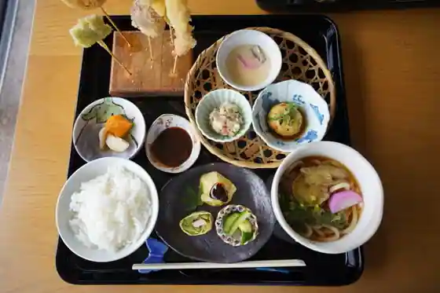
Danran
テイクアウトのお店 ももくめ
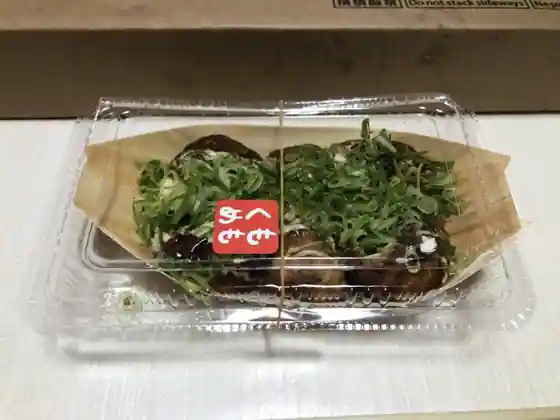
Teikuauto No Momokume